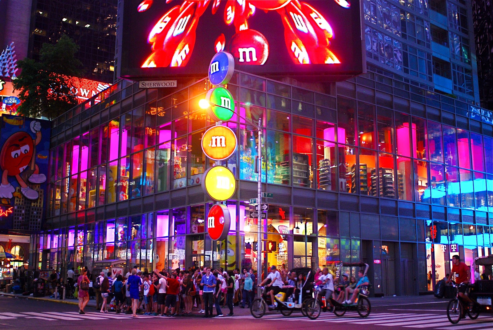
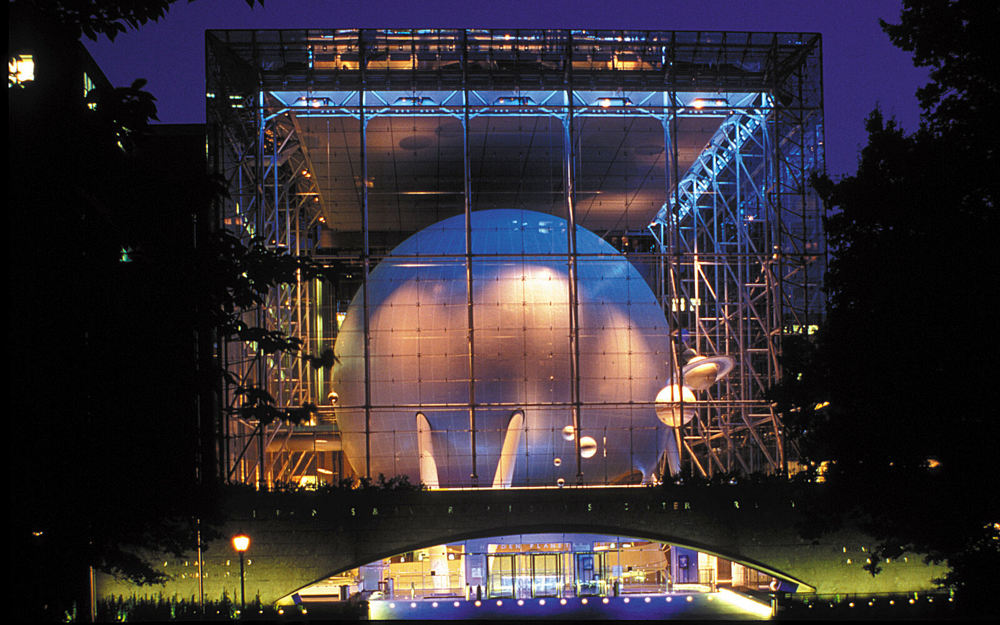
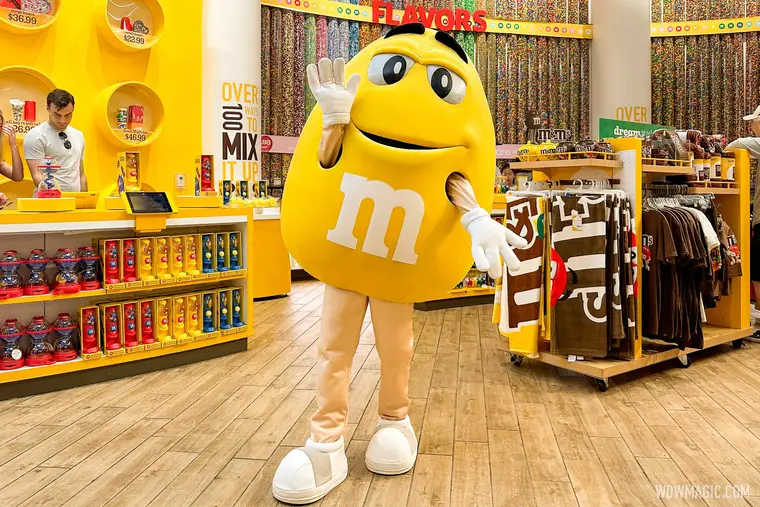

MY favorites Page
THE M&M STORE

The M&M's store in NYC (Times Square) is a multi-story,
immersive candy wonderland featuring a massive, two-story
"Wall of Chocolate" with thousands of candies, the ability
to print custom messages or faces on M&M's, and exclusive
NYC-themed merchandise. It is a vibrant, interactive tourist
estination, open daily until midnight, known for its colorful photo opportunities,
character meet-and-greets, and unique personalized souvenirs.Visitors can create
custom-printed M&M's in minutes, choosing from 15+ colors and adding custom
messages or graphics (like "I Love NY" or Statue of Liberty images).
THE LEGO STORE

The LEGO Store on 5th Avenue in NYC is special because it
is a two-story flagship experience featuring massive, immersive New York
City-themed builds, the interactive Minifigure Factory, and exclusive products.
Highlights include a life-sized LEGO taxi you can sit in, a giant "Tree of Discovery,
" and mosaics of iconic landmarks like the Brooklyn Bridge and Empire State Building
THE AMERICAN MUSEUM OF NATURAL HISTORY(ROSE CENTER)

The Rose Center for Earth and Space at the American Museum of Natural History
in NYC is special for its iconic 87-foot "floating" Hayden Sphere, which houses a cutting-edge
planetarium and the Big Bang theater. It features immersive,scale exhibitions on cosmic history,
including the Heilbrun Cosmic Pathway and the Scales of the Universe walk, designed to educate through
dramatic architecture and advanced technology.
